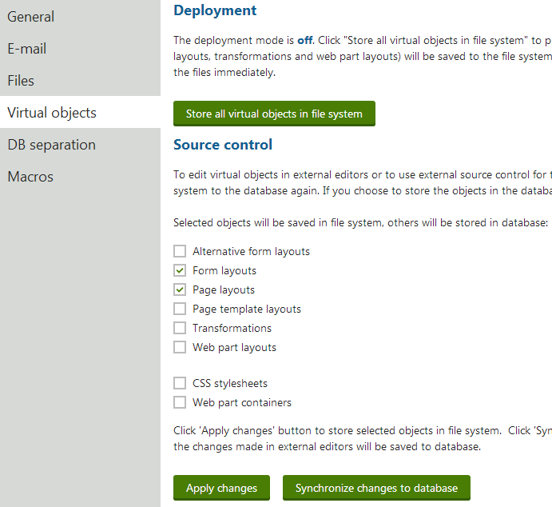

Editing object code externally
Kentico provides a way to store the code of virtual objects in the file system in addition to the database. Having code files on a local disk allows you to edit code in external editors or manage it using a source control system.
Note: This feature only manages code. Other object data and settings remain only in the database and are NOT represented in the file system. The continuous integration solution provides a more complete solution if you wish to synchronize development objects using a source control system.
To store object code in the file system, open the System application and select the Virtual objects tab. The options in the Source control section allow you to select which objects are stored in the file system:
|
Option |
Requires compilation |
|
Yes (for ASCX layouts) |
|
|
Yes (for ASCX layouts) |
|
|
Yes (for ASCX layouts) |
|
|
Yes (for ASCX layouts) |
|
|
Yes (for ASCX transformations) |
|
|
Yes |
|
|
No |
|
|
No |
To store object code in the file system, select the boxes next to the required object types and click Apply changes. The file are saved in the ~/CMSVirtualFiles folder.
To move object code back into the database, uncheck the corresponding boxes and click Apply changes. Checked objects stay in the file system and unchecked objects are moved back into the database.
Click Synchronize changes to database to copy the code from the files on the disk into the matching objects in the database.

Form layouts and Page layouts are stored on the disk and can be managed using a source control system
Source control in Deployment mode
If Deployment mode is ON, you cannot configure the source control options for objects that require compilation (only for Web part containers and CSS stylesheets).
When using source control mode, you can still edit the code of objects through the Kentico administration interface. If you edit an object, the system displays the code from the corresponding file. Saving the code in the UI writes the data into both the file system and the database.
Limitations
Do not apply hotfixes while using source control mode. Before you start the hotfix procedure, return files to the database. You can re-enable source control mode once the hotfix is applied.
The Staging feature has limited support for synchronizing object code when using source control mode:
On source servers, staging tasks are generated only if you edit code in the Kentico UI or after you synchronize changes from files into the database.
On target servers, source control mode must be disabled if you wish to use incoming staging tasks to update object code.
Using source control on web application projects
When you enable source control on web application installations, the system cannot automatically integrate the created files into the Visual Studio project. If you wish to edit the code of objects directly within your web application project, perform the following steps:
Open the project in Visual Studio.
Click Show all files at the top of the Solution Explorer.
Right-click the CMSVirtualFiles folder and select Include in Project.
Build the CMSApp project.
You can now edit the code files of objects in Visual Studio inside the CMSVirtualFiles folder. In source control mode, the system generates ascx files without code behind files, so you do not need to convert the files into the web application format.